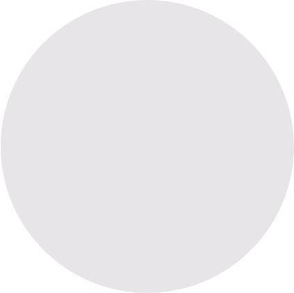

KREATURA MEDIA
presents


LAYERSLIDER
GREENSOCK ENGINE
with the latest technologies
SMOOTH RENDERING
with hardware-acceleration
NEW TRANSITIONS
slide, fade, scale, skew and rotate layers even in 3D
CLEANER MARKUP
working with the plugin is more easy
&
RESPONSIVE
mobile ready
VERSION
5
WITH HUGE
AND
PERFORMANCE
FEATURE UPDATE


8x
performance
many new
features


embedding videos?


video
video
video + audio
RICH MEDIA SUPPORT
WITH OPTIONAL AUTOPLAY


&
ALL THESE FEATURES
much more!
...to create
THE BEST SLIDER
with no compromises!